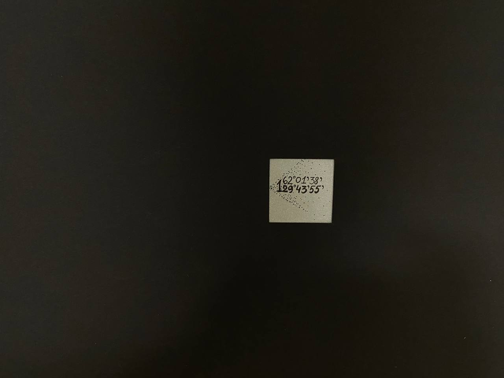
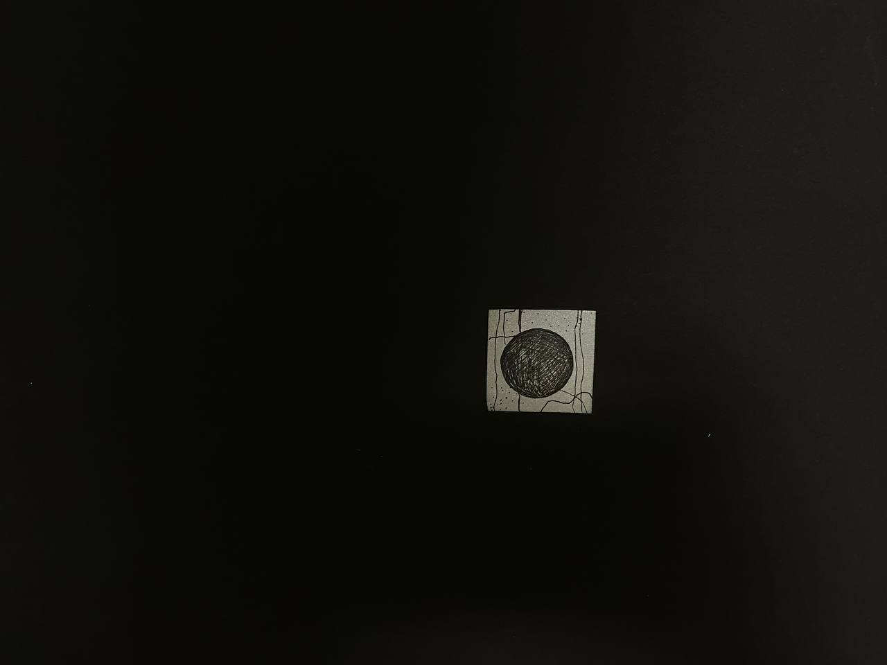

"Prototypes of olonkho", 2019, cardboard, pen In olonkho, the contradiction of order and chaos, good and evil is solved and an equilibrium is established, perceived as a single fusion of the heavenly and earthly, and then the entire structure of olonkho, its plot-addition, and figurative system are built around this dualistic worldview, the leading idea of which is the constancy of dynamic equilibrium.
"Прототипы олонхо", 2019 год, карточная бумага, ручка В олонхо разрешается противоречие порядка и хаоса, добра и зла, устанавливается равновесие, воспринимаемое как единое слияние небесного и земного, и вся структура олонхо, его сюжетное дополнение и образная система строятся вокруг этой дуалистической мировоззренческой идеи, ведущей идеей которой является постоянство динамического равновесия.